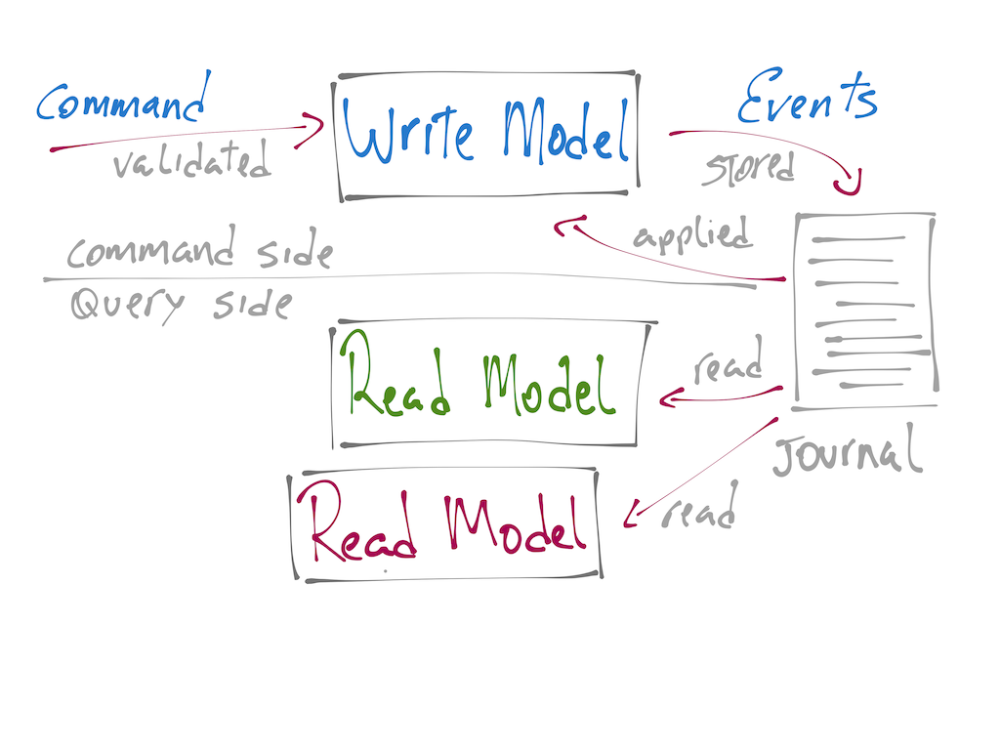

name: inverse layout: true class: center, middle, inverse --- # Functional Event Sourced Apps #with Fun.CQRS [strongtyped/fun-cqrs-scalaio](https://github.com/strongtyped/fun-cqrs-scalaio/) [strongtyped/fun-cqrs-scalaio-slides](https://github.com/strongtyped/fun-cqrs-scalaio-slides/) --- layout: false .left-column[ # Agenda ] .right-column[ 1. Introduction to CQRS and Event Sourcing 2. Fun.CQRS, highlevel feature overview 3. Write model design (configuring and testing) 4. Read model design (configuring and testing) ] --- class: left, top # What is CQRS? ## Command Query Responsibility Segregation - two models: **Command** or **Write** model **Query** or **Read** model - on the **Write Side** we receive **Commands** and emit **Events** - on the **Read Side** we consume **Events** and generate **Views** --- layout: false # What is Event Sourcing? - **Event Sourcing** happens when you store every single event generated in your system. - Very often used in combination with **CQRS**. - Together they give us a lot of power. - The **Event Log** is the single source of truth, nothing else matters... --- ## And than there is this **Aggregate** thing that nobody understands... - It's a DDD concept defining a **Consistency Boundary** - In **CQRS** it maps to your **Command Model** - In **Event Sourced** it's 'degraded' to a kind of validator only the **Events** matter (more on that later) - An **Aggregate** (CQRS/ES ctx) represents somehow the history of past **Events**. - It's the **Guardian** that decides if a **Command** can be accepted or not (think **Consistency Boundary**) ??? It's an interpretation of past **Events**. Think of it as the Accumulator of a foldLeft over all past events. --- # Kind of big picture of it  --- # Entering Fun.CQRS - It's a minimal framework for CQRS / ES in Scala - Tries to define an opiniated Functional Foundation for **CQRS** - As of today, it has two backend implementations: **AkkaBackend** and **InMemoryBackend** - Based on **Interpreters** (no Free Monad) and some type system trickery that I'm still scared about. --- # More Fun.CQRS - `Commands` and `Events` define a `Protocol`. - `Actions` are `Command Handlers` and `Event Handlers`. - Together, they defined the `Behavior` of an `Aggregate`. - And it has `Projections` to generate whatever you want from the persisted `Events`. --- class: center, middle, inverse #Short Demo before the main course --- class: center, middle, inverse #Order App A classical shopping cart application. <a href="https://github.com/strongtyped/fun-cqrs-scalaio/" target="_blank"> strongtyped/fun-cqrs-scalaio </a> --- # Before we start... ```bash git clone git@github.com:strongtyped/fun-cqrs-scalaio.git # Please, don't tell me you didn't clone it yet cd fun-cqrs-scalaio # start sbt sbt ``` ### In sbt prompt ```sbt groll initial ~test ``` ### Open `Order.scala` and `OrderTest.scala` --- #Step 1 Implement 'factory actions' and 'EmptyOrder' behavior ###`EmptyOrder` First state once we initialize the **Order Aggregate**. It has not items. - we call the 'factory actions' the **Command** and **Event Handlers** needed to bootstrap the **Aggregate** (head to Order companion object). - 'EmptyOrder' behavior must be implemented in `EmptyOrder.possibleActions` Accepts AddItem and CancelOrder commands. Requires interaction with the 'fake' `StockService` --- #Step 2 ### `NonEmptyOrder` A non-empty order has at least one item. - Head to `NonEmptyOrder.possibleActions` - `AddItem` and `RemoveItem` items must interact with `StockService` - `CancelOrder` as well - `PayOrder` must interact with `BillingService` If all items are removed, `NonEmptyOrder` transition back to `EmptyOrder` state. --- #Step 3 `PayedOrder` and `CancelledOrder` behavior `PayedOrder` and `CancelledOrder` cannot accept any new commands and therefore is considered to have reached its end-of-life. How can we deal with that? tip: use `rejectCommand` method. Watch-out the kind of function it accepts! --- #Step 4 Up to now we have only worked on the **Command Side**. A **Projection** is basically a `PartialFunction[DomainEvent, Future[Unit]].` Often used to generate **Views**, but can also be used for intra **Aggregate** communication. Head to `OrderDetailsProjection` --- #Step 5 How to initialize an Order using the `AddItem` command? Can we emit a list of Events List(OrderWasCreated, ItemWasAdded) in the 'factory actions'? Let's break the tests and see how we can fix it. Pick one of the test and comment out the 'creation' commad. ```scala // orderRef ! CreateOrder ``` --- class: middle, center, inverse # Thanks! renato@strongtyped.io [www.funcqrs.io](http://www.funcqrs.io) [@renatocaval](http://twitter.com/renatocaval) / [@strongtyped](http://twitter.com/strongtyped) --- class: center, middle, inverse The following slides can be analysed later. It's a trial to define the basic functions of a CQRS application in a very informal way. We can discuss it later around a beer! ;-) --- # Functional CQRS Foundation - part 1 ```scala // the seed Command => Seq[Event] Event => Aggregate ``` ```scala // updates (Aggregate, Command) => Seq[Event] (Aggregate, Event) => Aggregate ``` --- # Functional CQRS Foundation - part 2 ```scala // the seed - Option[Aggregate] = None // updates - Option[Aggregate] = Some[Aggregate] (Option[Aggregate], Command) => Seq[Event] // note that the returned Option[Aggregate] will always be a Some[Aggregate] (Option[Aggregate], Event) => Option[Aggregate] ``` --- # Functional CQRS Foundation - part 3 but because a command can be rejected... ```scala (Option[Aggregate], Command) => F[Seq[Event]] (Option[Aggregate], Event) => F[Option[Aggregate]] ``` Where __F[_]__ is a type constructor for something that can represent failed computations. (eg: Future, Try, left bounded Either, scalaz.Validation, cats.Validated, cats.Xor) --- # Functional CQRS Foundation - part 5 Given ```scala // F[_] omitted (Option[Aggregate], Command) => Seq[Event] (Option[Aggregate], Event) => Option[Aggregate] ``` Than... ```scala // F[_] omitted (Seq[Event], Command) => Seq[Event] (Seq[Event], Event) => Seq[Event] ``` source: http://verraes.net/2014/05/functional-foundation-for-cqrs-event-sourcing/